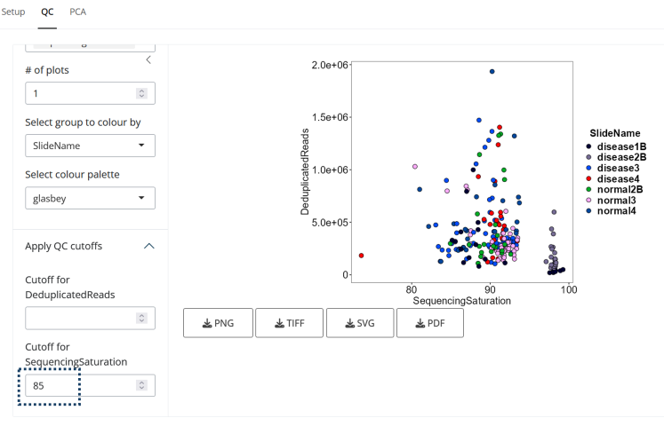
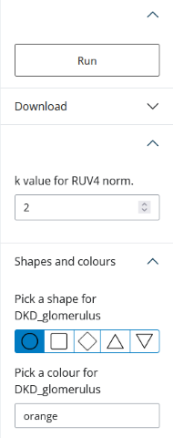

shinyDSP vignette
Seung J. Kim
Interstitial Lung Disease Lab, London Health Sciences Centerseung.kim@lhsc.on.ca
Angwara (Book) Nilanont
Interstitial Lung Disease Lab, London Health Sciences CenterMarco Mura
Interstitial Lung Disease Lab, London Health Sciences CenterDivision of Respirology, Department of Medicine, Western Universitymarco.mura@lhsc.on.ca
Oct 2024
vignette.RmdIntroduction
shinyDSP: Analyzing and Visualizing Nanostring GeoMx DSP Data
shinyDSP is an intuitive Shiny application designed for the comprehensive analysis and visualization of Nanostring GeoMx DSP data. Users can upload either demo or custom datasets, consisting of count and sample annotation tables. The app prompts users to select variables of interest, potential batch effects, and confounding factors, allowing for customized exploration.
With shinyDSP, users can create x-y scatter plots of any combination of categorical variables and apply user-defined cutoffs to filter samples. The app utilizes the R package, standR (Liu et al. 2023), to perform normalization using methods such as CPM, upper quartile (Q3), or RUV4 (Remove Unwanted Variation). Users can visualize PCA plots generated for each normalization method, color-coded by chosen variables or batch.
After selecting a normalization scheme, users can identify differentially expressed genes between specified biological groups using limma-voom (Ritchie et al. 2015). The app provides “raw” output numbers in tables, generates volcano plots for all pairwise comparisons, and displays heatmaps of the top differentially expressed genes.
shinyDSP aims to provide a robust, start-to-finish analysis of GeoMx data, producing publication-ready outputs that are easily customizable to meet individual aesthetic preferences.
Installation
if (!requireNamespace("BiocManager", quietly = TRUE))
install.packages("BiocManager")
BiocManager::install("shinyDSP")
# To install the development version from Github:
if (!requireNamespace("devtools", quietly = TRUE))
install.packages("devtools")
devtools::install_github("kimsjune/shinyDSP")
library(shinyDSP)Usage
library(shinyDSP)
app <- shinyDSP()
# This will open a new browser tab/window.
if (interactive()) shiny::runApp(app)User interface

There are four main UI components:
1. The nav bar where nav panels will appear.
Setup is a nav panel.
2. The main side bar. This is where you can set global
parameters.
3. The main display within each nav panel. This is where
outputs will appear.
4. A side bar within the setup
nav panel. This is where customization options will
appear.
Loading data
shinyDSP requires count and annotation tables (in .csv or .txt format) as input. These tables are generated with DSP Data Analysis (DSPDA) software. To see how these files should be formatted, click on “Use demo data”, then “Load data”. The top 10 rows of each table will be shown in the main display.
The main side bar will also be updated with various
options.

1. You can pick one or more variables of interest. It’s common to
combine two variables into one grouped variable. For example, “genotype”
and “treatment” can be combined into “genotype_treatment”. A new column
in your annotation table is automatically created.
2. A batch variable. “SlideName” is selected by default, but it could be
any categorical variable provided in the annotation table such as
“sample preparation batch”, etc.
3. Any confounding variable(s) such as age or sex of your samples that
you want to include in the design matrix for differential gene
expression analysis. None selected by default.
For this demo, “disease_status” and “region” are selected as the
variables of interest. All four groups of interest are selected
(DKD_glomerulus, DKD_tubule, normal_tubule, normal_glomerulus). After
selecting “Variable(s) of interest”, two new nav panels
appear: “QC” and “PCA”.
QC
Click on the “QC” nav panel to create scatter plots and
(optionally) filter samples not meeting cutoffs. 
1. Pick two or more quantitative variables to plot
and (optionally) filter.
2. If you select more than two variables, increase this number to show
all possible x-y plots.
3. Pick a variable for the colour legend. “SlideName” is the
default.
4. Pick one of the five colour palettes. “glasbey” is the default.
5. Click to open. You have the option of providing minimum threshold
value(s) for each variable from (1).
Lastly, click on “Show QC plots” to show/update the plots.
 In the example above, “SequencingSaturation” and “DeduplicatedReads” were selected. Then, I removed any samples with “SequencingSaturation” below 85. No filtering was applied based on “DeduplicatedReads”.
The scatter plot can be saved as .png, .tiff, .svg or .pdf by clicking the download buttons below each plot.
Now we move on to “PCA” (click on the nav panel).
PCA

Click on “Run” to generate PCA plots. For each group of interest and
batch variable that you selected in the main side bar, you
can pick its shape and colour. For example, “DKD_glomerulus” will appear
as black circles. You can pick between five different shapes and any
colour in grDevices::colours().
Two sets of three PCA plots are generated in the main display area.
Three normalization schemes are shown: CPM, Q3 (upperquartile), and RUV4
(Remove Unwanted Variation). Across the top and buttom row, the plots
are colour-coded by “Variable(s) of interest”, and the “batch variable”,
respectively. Click on “Download” in the side bar to find
all the download options.
Select the smallest value of “k value for RUV4 norm.” that removes any batch effect. Click on “Run” to show updated plots.
Normalization
Now you can choose the normalization scheme to use for differential
gene expression testing and the log fold-change cutoff for limma::topTable.
Selecting a normalization scheme will reveal three new
nav panels in the nav bar: “Table”, “Volcano”,
and “Heatmap”.

If you choose “RUV4”, you need to open the “PCA”
nav panelto load the k value.
Table
Clicking on the “Table” nav panel will automatically
start performing differential gene expression testing between all
selected “Groups of interest”. If more than two groups were selected,
all possible pairwise comparisons and an ANOVA-like test
between all groups are executed. This step can take about 3 minutes.
Results are separated into tabs highlighted in blue. Click
on the “Download table” button below each table to download it (in
.csv).

Volcano plots
Click on the “Volcano” nav panel and “Show/update”.
Like the tables, Volcano plots are shown in individual
tabs highlighted in blue.

There are several customization options for tweaking the look and
feel of these plots.
1. Higher number increases the number of gene names shown by allowing
them to overlap each other.
2. Higher number makes the labels larger.
3-4. These options are used to colour those genes not meeting cutoffs to
have “Not DE colour (7)”.
5. Those genes with logFC >= “logFC cutoff” are given this colour.
Must be a grDevices::color().
6. Those genes with logFC <= -“logFC cutoff” are given this colour.
Must be a grDevices::color()“.
7. Must be a grDevices::color().
8. Click to enable custom x and y ranges.
These settings are applied to all Volcano plots. Below each Volcano plot, you have the option to save it as four different file types.
Heatmap
For each “Table”, a corresponding heatmap is generated. The heatmaps
are also organized into individual tabs. By default, the
top 50 genes (sorted by adjusted P value) are shown as rows, clustered
based on Euclidean distances. There are a few customization options:
- Any N top genes can be plotted.
- The viridis
colour map is available.
- A custom range of Z score. Does not have to be balanced.
- This adjusts the overall size of the **downloaded* heatmap. Each
“square” will become smaller/bigger.
- Font size for row/gene labels.
Below each heatmap, you have the option to save it as four different file types.
Session Info
sessionInfo()
#> R Under development (unstable) (2024-10-01 r87205 ucrt)
#> Platform: x86_64-w64-mingw32/x64
#> Running under: Windows 11 x64 (build 22631)
#>
#> Matrix products: default
#>
#>
#> locale:
#> [1] LC_COLLATE=English_Canada.utf8 LC_CTYPE=English_Canada.utf8
#> [3] LC_MONETARY=English_Canada.utf8 LC_NUMERIC=C
#> [5] LC_TIME=English_Canada.utf8
#>
#> time zone: America/Toronto
#> tzcode source: internal
#>
#> attached base packages:
#> [1] stats graphics grDevices utils datasets methods base
#>
#> other attached packages:
#> [1] BiocStyle_2.33.1
#>
#> loaded via a namespace (and not attached):
#> [1] digest_0.6.37 desc_1.4.3 R6_2.5.1
#> [4] bookdown_0.41 fastmap_1.2.0 xfun_0.48
#> [7] cachem_1.1.0 knitr_1.48 htmltools_0.5.8.1
#> [10] rmarkdown_2.28 lifecycle_1.0.4 cli_3.6.3
#> [13] sass_0.4.9 pkgdown_2.1.1 textshaping_0.4.0
#> [16] jquerylib_0.1.4 systemfonts_1.1.0 compiler_4.5.0
#> [19] rstudioapi_0.16.0 tools_4.5.0 ragg_1.3.3
#> [22] bslib_0.8.0 evaluate_1.0.1 yaml_2.3.10
#> [25] BiocManager_1.30.25 jsonlite_1.8.9 rlang_1.1.4
#> [28] fs_1.6.4 htmlwidgets_1.6.4